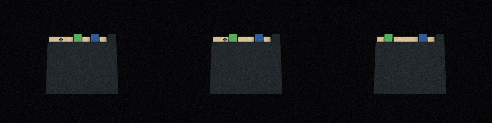
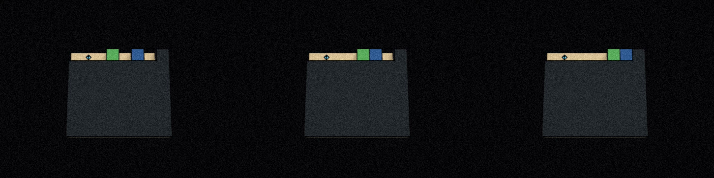

Qwen could tell me which object gave it a gem. In 16 tests, it answered correctly every time. When I forked the same histories and asked it to move instead, it chose that object only nine times. In the other seven, it spent its remaining moves walking toward a block.
I was running Qwen3.8-27B locally in MazeBench, using the Control Center I built to read its reasoning alongside each move. The mismatch kept showing up, including when I made Qwen answer the question immediately before acting. It made me much less willing to take a good explanation as evidence that an agent will follow it.
The MazeBench Control Center is open source. It lets you replay a run and branch from an earlier turn to see what changes the next decision. That's how I compared the continuations below. You can use it with your own models too.
object_f. Cyan gems are object_O.The view changes the behavior
In the earlier runs, Qwen saw an ASCII map with unfamiliar symbols. It had to work out what they meant by moving around. A weightless block appeared as ?. Qwen guessed it might be a gem, pushed it without collecting anything, and began to doubt the idea. Later, it came back to the same block and the same guess.
The reasoning sometimes said the block probably wasn't a gem. That conclusion never seemed to settle the question for long.
Returning to the same block
Part of the difficulty was reading the world. In a small maze shown through either a grid or JSON, nine of ten JSON runs reached the next room, compared with three of ten grid runs. With the grid, Qwen often reached an open edge and treated it as a dead end. Explicit coordinates made navigation easier.
Object names mattered too. When the observation called the object a box, Qwen could use that familiar meaning. With an anonymous label such as object_f, it had to infer the object's behavior from interactions, and the gem theory returned even after an unrewarded push. JSON helped with geometry without necessarily fixing that confusion.
The world hadn't changed, but the help supplied by the interface had. Calling something a box gives away information that an anonymous label doesn't. These comparisons don't isolate a single cause, but they show how much the agent's apparent understanding depends on how we describe its surroundings.
That seems relevant well beyond mazes. A browser agent might receive a screenshot, a DOM tree, or a list of labeled controls. A coding agent might read a raw log or a structured error report. I'd expect those choices to affect what it notices and how much reasoning it has left for the task. Here, Qwen could spend its reasoning trying to understand the room and miss evidence about the object it was approaching.
Knowing what happened didn't settle the next move
To get a clearer view of the decision itself, I used small rooms with JSON observations and two anonymous objects. Qwen pushed object_f; it moved, but the gem count stayed at zero. A scripted path then took the player through two instances of object_O. Each disappeared as the gem count rose.
The final room offered one of each, both two moves away. This is where Qwen could identify the rewarded object in all 16 question branches, yet approach it in only nine action branches. The action prompt asked for the best-supported choice and allowed exactly two moves, so going the wrong way left no time to recover.
Those were separate continuations from the same history. They show that Qwen could recover the relevant fact when asked, without proving it was using that fact while choosing an action. Some action traces did recall the earlier gem pickups and still chose the block. Others spent most of their reasoning on the local geometry and assumed the nearby object was a gem.
Recent movement had a strong influence. I varied the last part of the path while keeping the final position and board identical. Qwen repeated the last movement in 13 of 16 runs. Changing the recent path could change its choice even though the objects and the evidence about them stayed the same. The path also changed what it had just been looking at, so I can't attribute this entirely to repeating a command.
With a larger action budget, every run in a similar set eventually collected the gem. After a wrong turn, reaching it took seven or eight actions in total, compared with two for a direct approach. Qwen often needed another blocked move before it reconsidered. A success score alone would have hidden that difference.
Even a correct reminder could go wrong
Asking the reward question immediately before the move looked promising. When recent movement pointed away from the gem, Qwen chose correctly in seven of eight runs after that question, compared with four of eight after a neutral question about its current room. Keeping only its short answer, object_O, without the accompanying reasoning still gave six correct choices in eight runs.
That was enough to try a different reminder. I asked either which object had produced reward or which object had moved without reward and later blocked movement. Qwen answered both questions correctly. The first identified object_O as worth approaching; the second identified object_f as the unsuccessful option.
The difference in the next action was large. After naming the rewarded object, Qwen approached it in 15 of 16 runs. After naming the unrewarding block, it chose the gem in only six of 16. The other ten went toward the block it had just correctly described.
Changing the question before the move
collected_gem_count, and absent from that location immediately afterward?object_O
collected_gem_count, then occupied the destination of a later move whose result left the state unchanged?object_f
object_O) · blue: block (object_f)
Some traces effectively reversed the meaning of the answer. Qwen identified object_f as the object that moved without reward, then called it the option best supported by the evidence and approached it. Other traces correctly described the block as unrewarding and object_O as the gem, but still emitted the move toward the block.
My suspicion is that naming an object made it more likely to become the next target, even when the question gave a reason to avoid it. Qwen might also have interpreted the preceding exchange as a hint about where to go. The obstruction question was harder: answering it took more than twice as many tokens on average, and the following action hit the reasoning limit more often. These runs don't separate those explanations.
What I'd want an agent to learn
I find the warning case more concerning than an ordinary wrong answer. Imagine a coding agent correctly identifying a file that must remain untouched, then making its next edit there. Or a tool-using agent explaining why a request failed, then retrying it unchanged. I haven't tested those tasks here, but they are the kinds of failure I'd now look for. Asking the agent to explain the rule wouldn't be a sufficient check.
For training, I'd focus on whether a conclusion changes the next action. Give the agent evidence that contradicts an earlier guess, let it explain what happened, then check its command. Include cases where the last few actions point the wrong way and where the object just mentioned is something to avoid. Rewarding a correct explanation on its own would miss the failures in these runs.
I'd also train and evaluate across different views of the same environment. The agent should practice inferring what an unfamiliar object does from changes in state, then using that inference later. Familiar labels can make a task much easier without showing that the model learned the underlying behavior. For a deployed agent, a clearer observation format may be a practical improvement; for training, I'd still want to know what happens when those helpful labels disappear.
One approach worth testing is to have the agent predict the consequence of its proposed action and compare it with the evidence it already has. If pushing this object produced no reward, what supports expecting a reward now? That check would need to be judged against the command and the actual outcome. It could otherwise become another plausible paragraph followed by the same bad move.
Recovery deserves attention too. Qwen often corrected course once the environment blocked it again. I'd want training to encourage using that feedback before repeating the mistake in a later room. Evaluation should count the unnecessary actions along with eventual success, and include situations where a wrong first step can't be undone. The maze makes retries cheap; a real tool call might not be.
Longer context and more reasoning may help, especially when interpreting the observation consumes much of the available budget. But several failures happened with the relevant evidence still present, sometimes just restated by Qwen itself. I'd measure whether extra tokens improve the resulting action before treating them as a fix.
These are small diagnostic runs with one locally quantized Qwen3.8-27B model, custom worlds on the MazeBench engine, and a limited reasoning budget. The later tests deliberately started from runs where Qwen had treated the block as a possible reward. They aren't an estimate of how often agents fail in general, and another model or precision could behave differently.
For now, I'd be cautious about trusting Qwen with a task just because it can explain what to do. In these rooms, I could ask the right question and get a convincing answer while leaving the next move unreliable. That's where I want to spend more of the training and evaluation effort.